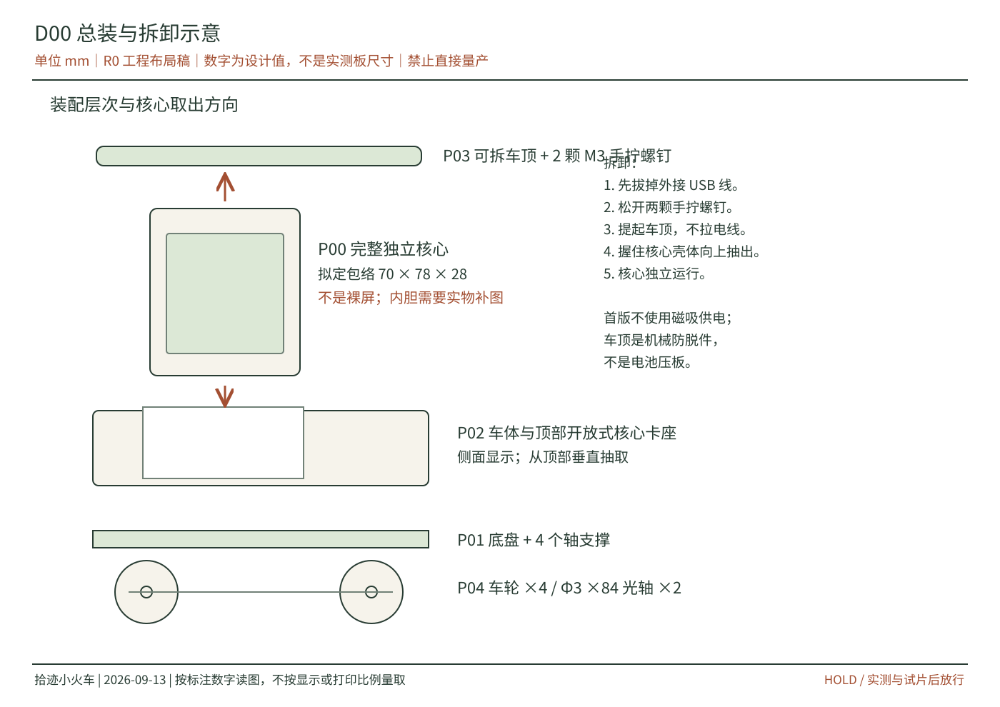
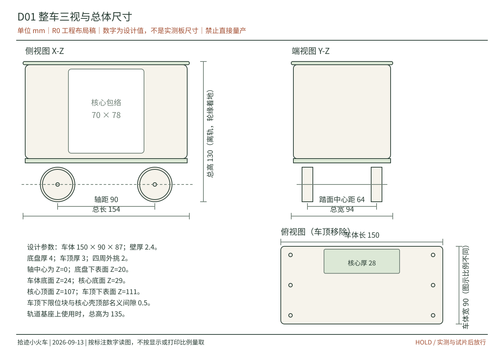
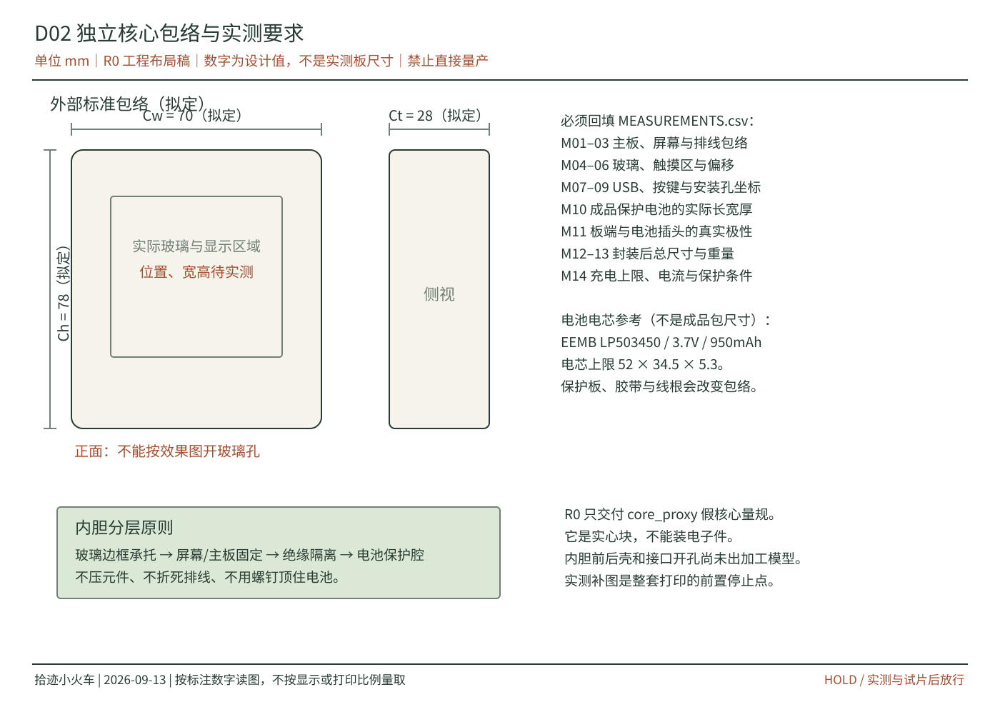
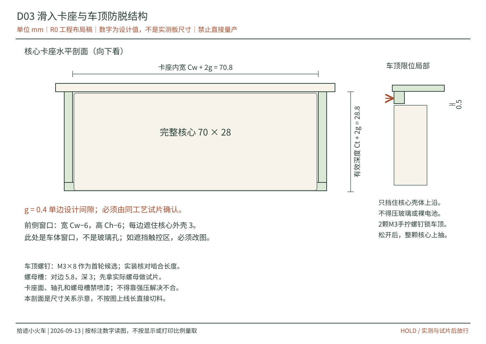
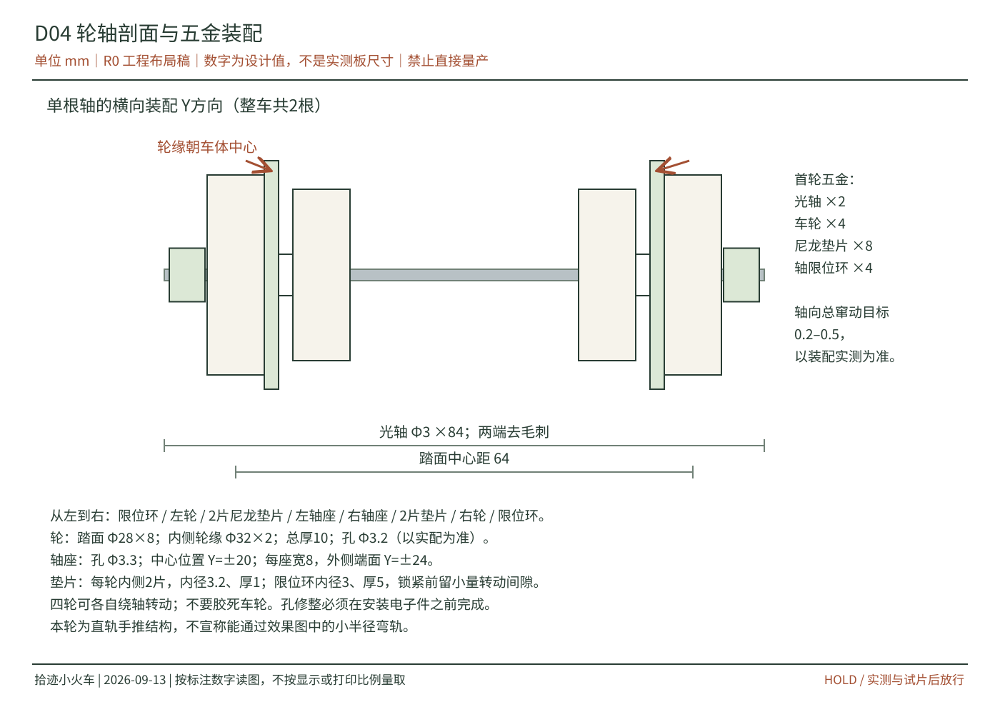
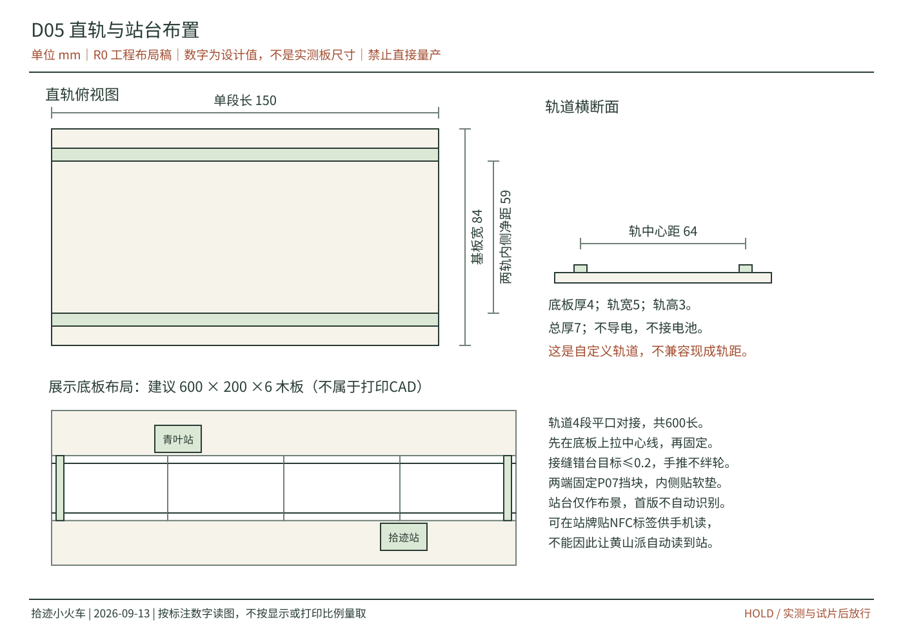
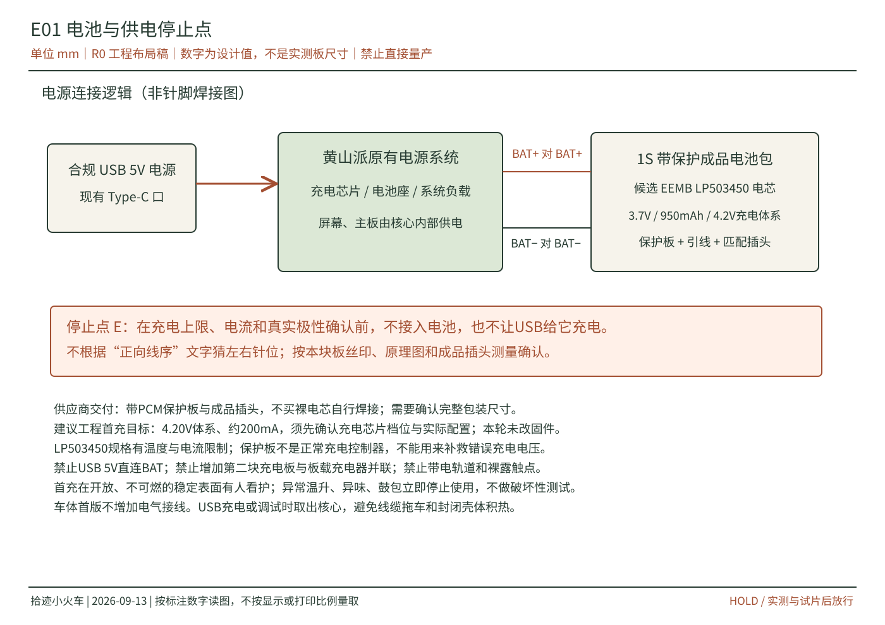
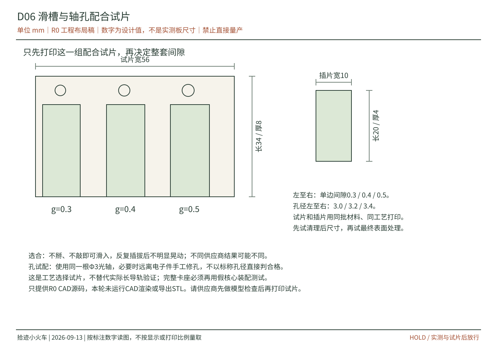

D00 总装与拆卸示意

下载独立SVG矢量图。可放大阅读；标注为设计值，未获得实物适配放行。
适用方式：商家3D打印，你自行装配。目标是做出一辆能手推、能展示角色、能把完整黄山派核心取出独立使用的小火车，而不是重新设计电动机车。
版本 R0：工程布局及采购准备包。已经给出结构关系、拟定尺寸、七张矢量图、参数化车体源码、物料清单和执行顺序。没有完成实物测量、核心内胆加工设计、STL导出或实物装配验证。
尺寸停止点 M：先得到主板/屏幕/排线和成品电池的真实尺寸，再定核心内胆、车体卡座和接口开孔。电气停止点 E：先确认充电芯片、充电上限、电流和插头极性，再接电池。当前不能把本包直接当作整套生产放行文件。
PDF由浏览器按当前版式打印生成，本包没有预先生成或校验PDF。图纸必须按标注数字读图，不得直接从打印图上量取加工尺寸。
取出流程：拔掉USB线 → 松开两颗车顶手拧螺钉 → 提起车顶 → 握住完整核心壳体向上抽出。不是只拿走显示屏，也不需要拔FPC。
造型建议：奶油白车体、苔绿车顶、灰绿车轮、青叶站与拾迹站的纸质字牌。侧面角色窗口最大化；贴花和花叶仅放车头、车顶边和站牌，不遮触控区。
先直轨是有意取舍：固定轴距的首版底盘不能直接照此前概念图配小半径弯轨。弯轨要重新设计转向架、轮轨间隙和最小转弯半径。
官方当前规格是3.7V、950mAh，电芯外形上限52 ×34.5 ×5.3mm，约19g。不能把“503450”自行解读为包含保护板和线材后的最终尺寸，也不要照其他厂家的同名1000mAh产品替换。
选它的理由：比小容量电池更适合作为显示原型的初始候选；板状结构方便与屏幕/主板分层。这个判断不构成续航保证。额定能量约3.515Wh；实际续航必须用整机工作状态测量，不套用开发板宣传待机时间。
请报价一只基于EEMB LP503450电芯的1S成品锂聚合物电池包。 额定3.7V，官方当前电芯容量950mAh，4.2V充电体系。 必须由供应商配好过充/过放/过流/短路保护PCM及绝缘包装，不要裸电芯。 线材与2芯GH1.25配套插头按黄山派实际电池座确认；针序以板端丝印及测量为准。 请提供成品包长宽厚上限（含PCM、胶带、线根）、引线长度、极性照片、充电条件与规格书。 请说明是否可提供单件样品。尺寸与极性确认前不要制作不可退的专用线束。
官方产品页是裸电芯页，不是带正确插头的即买即用成品。采购对象必须是满足上述条件的完成品；若供应商只卖裸电芯或保护资料不清，换供应商，不自行焊电芯。
工程首充建议采用4.20V体系、约200mA的保守目标，并确认芯片实际可配置档位及温度限制。这只是拟定目标，本轮没有写入任何充电寄存器。电芯规格允许的最大电流不是推荐日常充电值，保护板也不能替代充电器。
现有本地代码提到了AW32001，检查到的片段主要涉及充电使能和看门狗，不能据此证明电压、电流已正确配置。公开硬件说明在不同段落也出现充电芯片名称差异，因此必须以你的实板版本、原理图及读回配置为准。
电芯参数来源：EEMB产品页与厂商规格书，第3–4页。成品包仍须供应商确认。
准备数显卡尺、直尺、纸和手机。关机、拔USB，先不装新电池。不拆焊、不改变原屏幕排线的自然弯曲。以主板左下角为坐标基准，拍清正面、背面和侧面。
本包提供实心假核心量规，用于验证卡座空间与抽取通道；它不能作为装主板、电池的外壳。内胆加工模型尚未发布是有意的安全与适配停止点，而不是让你把板子随意塞进空腔。
内胆设计原则：玻璃非显示边缘承托；PCB按实际固定点安装；电池与尖锐焊点、金属螺钉之间有绝缘隔离和非挤压空间；USB插头要能完全插入。先做空壳和等尺寸假件，不拿电池当配合量规。
七张SVG均为确定性矢量图，不是AI生成的尺寸图。标注的数值是R0设计意图；机械、内胆和电气停止点尚未解除。每张可单独下载给商家评审。

下载独立SVG矢量图。可放大阅读；标注为设计值，未获得实物适配放行。

下载独立SVG矢量图。可放大阅读；标注为设计值，未获得实物适配放行。

下载独立SVG矢量图。可放大阅读；标注为设计值，未获得实物适配放行。

下载独立SVG矢量图。可放大阅读；标注为设计值，未获得实物适配放行。

下载独立SVG矢量图。可放大阅读；标注为设计值，未获得实物适配放行。

下载独立SVG矢量图。可放大阅读；标注为设计值，未获得实物适配放行。

下载独立SVG矢量图。可放大阅读；标注为设计值，未获得实物适配放行。

下载独立SVG矢量图。可放大阅读；标注为设计值，未获得实物适配放行。
没有替你购买或支付。先向商家要工艺与报价，不给未经报价的价格承诺。按状态分批采购，避免先买完整套件却发现核心尺寸要调整。
| 编号 | 名称 | 数量 | 规格 | 说明 | 状态 |
|---|---|---|---|---|---|
| P00 | 完整独立核心内胆 | 1套 | 前后壳及固定架 | 待M01–M14实测补图，CAD不含内胆 | 暂停加工 |
| P01 | 底盘 | 1 | 尼龙打印；含4个轴座 | CAD part=chassis | 整套放行后 |
| P02 | 车体与卡座 | 1 | 尼龙打印；壁厚2.4 | CAD part=body | 整套放行后 |
| P03 | 可拆车顶 | 1 | 尼龙打印；厚3 | CAD part=roof | 整套放行后 |
| P04 | 车轮 | 4 | 踏面Φ28；内轮缘Φ32；轴孔Φ3.2 | CAD part=wheel；孔需实配 | 整套放行后 |
| P05 | 直轨 | 4 | 150×84×7；自定义轨道 | CAD part=track | 整套放行后 |
| P06 | 站牌 | 2 | 60×35底座；总高48 | CAD part=station；贴纸字牌 | 整套放行后 |
| P07 | 端部挡块 | 2 | 10×84×12；内侧贴软垫 | CAD part=end_stop | 整套放行后 |
| T01 | 配合试片与插片 | 1组 | 尼龙；单边0.3/0.4/0.5 | CAD part=fit_coupon | 先问商家模型检查及试片报价 |
| T02 | 假核心量规 | 1 | 70×78×28只是当前拟定包络 | CAD part=core_proxy；实心块不得装电子件 | 尺寸方案确认后试装 |
| H01 | 圆光轴 | 2 | Φ3×84；端部去毛刺 | 请商家切长；普通钢或不锈钢 | 通用五金可询价 |
| H02 | 轴限位环 | 4 | 内径3；外径约8；厚5；带紧定螺钉 | 实际外径不得与轮或车体干涉 | 按到货尺寸实配 |
| H03 | 尼龙平垫片 | 8 | 内径3.2；厚1；外径约8 | 每轮内侧2片 | 通用五金可询价 |
| H04 | M3机器螺钉 | 4 | M3×14候选；配薄垫片 | 底盘到车体；装配复核长度 | 通用五金可询价 |
| H05 | M3手拧螺钉 | 2 | M3×8候选；手拧头不碰外壳 | 车顶锁止；装配复核长度 | 通用五金可询价 |
| H06 | M3六角螺母 | 6 | 常规约5.5对边；实际尺寸先配槽 | 车体4颗，车顶2颗 | 通用五金可询价 |
| H07 | 展示底板 | 1 | 建议600×200×6木板 | 另购或加工；CAD未包含 | 可先按摆放空间调整 |
| H08 | 轨道固定与挡块软垫 | 1组 | 薄双面胶与EVA防撞垫 | 只用于无源轨道及挡块；不包紧电池 | 按现场选 |
| E01 | 已有黄山派与屏幕 | 1套 | 保持原板与排线 | 不拆焊、不打孔 | 已有 |
| E02 | 带保护成品锂聚合物电池 | 1 | EEMB LP503450电芯方案；3.7V 950mAh | 必须由供应商配PCM和匹配插头；裸电芯页不是成品采购链接 | 电气及尺寸确认后采购 |
| E03 | 电池成品线束 | 1 | 与板端匹配的2芯GH1.25；极性待核 | 由供应商制作；不按颜色或文字猜针序 | 电气停止点 |
| O01 | 无源NFC标签 | 0–2可选 | 用于手机打开站点或作品链接 | 不是车端读卡器 | V1非必需 |
卡尺、万用表、与五金匹配的六角扳手/螺丝刀、手钻或手动铰孔工具、细砂纸、去毛刺工具、标记笔。轴孔修整与涂装必须在电子件入壳之前进行；光轴尽量请商家切长，不在主板旁锯切金属。
承力件优先询价MJF PA12或适用SLS尼龙，明确材料牌号，不把不同“尼龙”当成同一种工艺。普通展示树脂不作为轴座、滑轨和长期锁止件的默认材料。若改FDM PETG，需要重新协商层向、支撑和配合间隙，不能照搬尼龙公差。
打印供应商公开说明中的制造公差可能接近滑动间隙的量级，所以试片是必要步骤，不是多余手续。参考：嘉立创3D打印设计指南。
提供OpenSCAD参数化源码。默认展示装配布局；此环境没有OpenSCAD，本轮未渲染CAD、未做网格或碰撞检查、未导出STL。商家若只接STL/STEP，不能把本源码改后缀当作STL；要先由能使用OpenSCAD的人员转档并检查。
# 仅输出工艺试片；先由商家检查模型 openscad -o fit_coupon.stl -D 'part="fit_coupon"' cad/train_r0.scad # 输出假核心；参数必须改为确认后的完整封装尺寸 openscad -o core_proxy.stl -D 'part="core_proxy"' cad/train_r0.scad # 只有尺寸、内胆与试片获确认后才解除 fit_confirmed 停止点。 # 下面是操作模板，不代表已经放行或执行。 openscad -o body.stl -D 'part="body"' -D 'fit_confirmed=true' cad/train_r0.scad
其他part名称：chassis、roof、wheel、track、station、end_stop。改变核心参数后，静态SVG中的总体数值可能需要同步更新；不要只改模型却继续使用旧图纸下单。命令用法参考OpenSCAD官方命令行说明。
以下是拟定工程检查，不是产品认证。不要自行做电池短路、过充、针刺、跌落等破坏性试验。
工程样通过后，才按同一套定版图做小批量；保留一件首件样和一套同批试片。若更换材料、打印商、涂层或电池，重新确认相关配合，不把旧结果直接套用。
若计划出售或作为儿童玩具发放，还需针对销售地、年龄定位、电池、机械小件等另行做合规评估。本包仅支持个人DIY与桌面展示原型，不能作为认证声明。
下一版R1需要：板屏实物尺寸、选定保护电池的成品尺寸、充电确认、试片结果。随后才能补核心内胆、修改必要开口、同步尺寸图并导出可制造的分件模型。
{kind=link}
{kind=link}
{kind=link}
{kind=link}
{kind=link}
{kind=link}
{kind=link}
{kind=link}